P3 充电线槽（扫掠）
支架要能边充电边用：在挡边后面开一个插头槽，再从槽底沿着底座下面挖一条通到背后的线槽，充电线就能藏在底座下面走。插头槽用拉伸“剪切”，弯曲的线槽用扫掠。
做完这一页，从底下看是这样的：
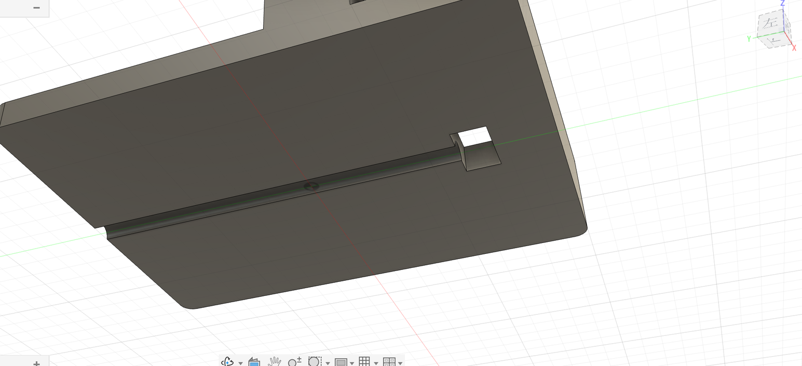
第 1 步：插头槽#
- 「创建草图」→ 点底板的上表面（同 P2 第 3 步）。
- 「中心矩形」：在挡边后面、左右大致居中的地方点一下当中心，往外拉出一个小矩形。
- 让它正好左右居中：「约束」组里点「水平/垂直」，再点矩形的中心点和原点。两个点就被摆到同一条竖线上了（这个约束对一条线用是“横平竖直”，对两个点用是“对齐”）。
- 按 D 标尺寸：宽
13、深7；再点矩形中心点和挡边内侧的边，标11.7。挡边厚 4 mm，所以槽中心离底座最前面是 4 + 11.7 = 15.7 mm，后面画线槽路径时要用到这个数。 - 「完成草图」。
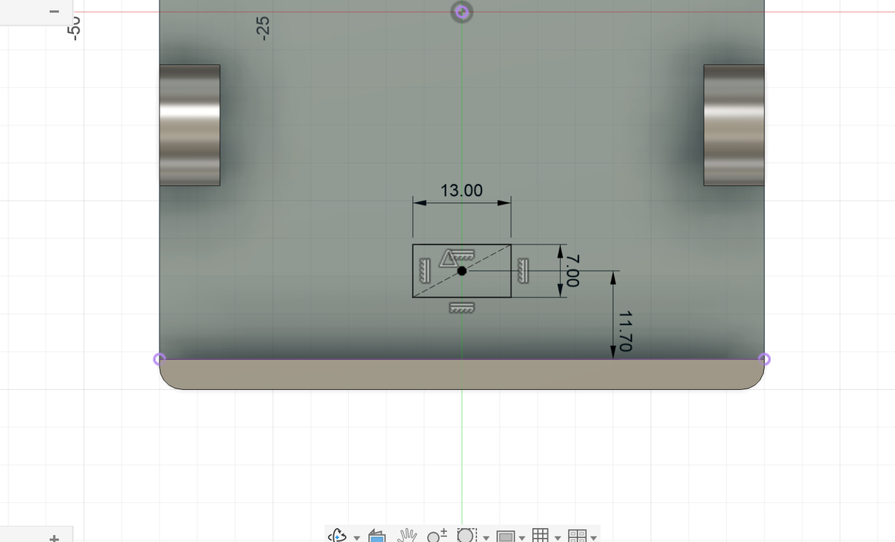
- 按 E，点小矩形，距离输入
-10（往下，比底板厚，保证打穿）。操作自动变成「剪切」，预览是红色的。点「确定」。
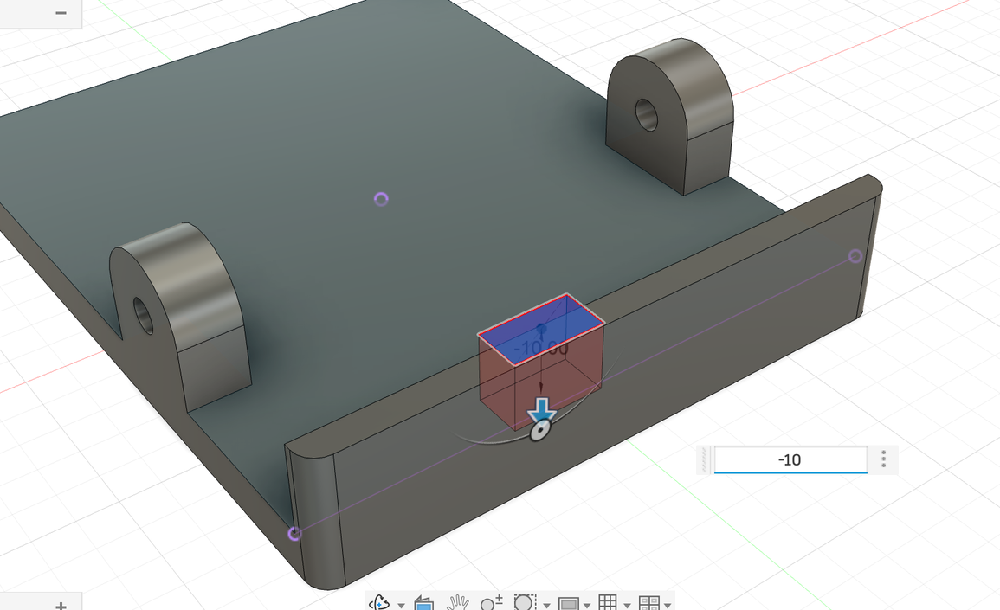
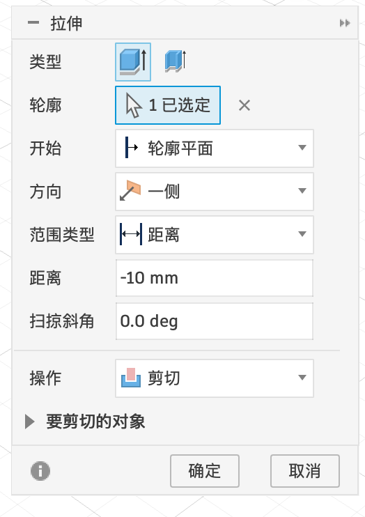
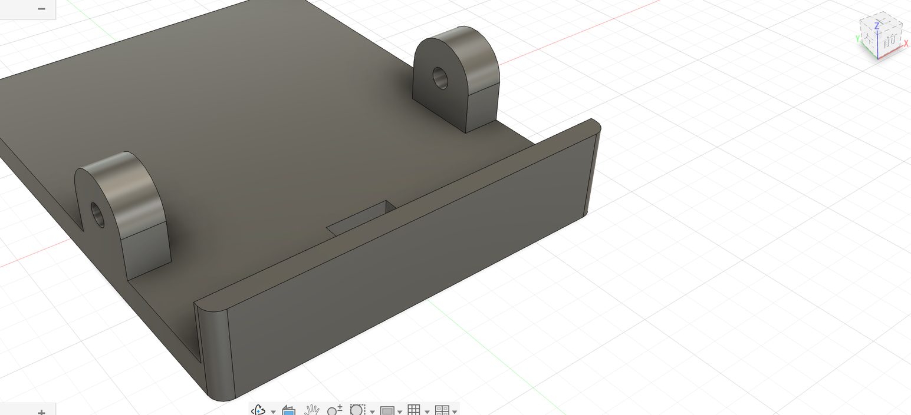
第 2 步：画线槽的路径#
扫掠需要一条“路径”。路径画在 YZ 平面（左右正中间的竖直平面）上，从侧面看是：先往下 → 拐个弯 → 沿底面往后。
- 「创建草图」→ 点 YZ 平面（在浏览器 底座:1 → 原点 里点 YZ，或者在画布上点那个竖直的平面）。
- 底座挡住了草图平面，看不清。在浏览器里展开 底座:1 → 实体，点底座实体前面的小眼睛暂时隐藏它（画完再点回来）。也可以在草图选项板勾「断面图」，把挡住的部分切开显示。
- 「直线」：在插头槽的位置、底板上表面的高度点第 1 点（路径起点），往下画 3 mm 点第 2 点；然后按住鼠标拖，直接接出一段相切圆弧，拐到底面（高度 0）松开；再接一条直线沿底面一直画到底座后边。按 esc。
- 把起点“钉”到准确位置：按 D，点起点、再点原点，分别标水平距离
34.3（底座深 100，前边离原点 50，50 − 15.7 = 34.3，也就是正好在插头槽中心）和竖直距离t（底板上表面）。再点圆弧标半径3、点第一段竖线标3。「完成草图」。
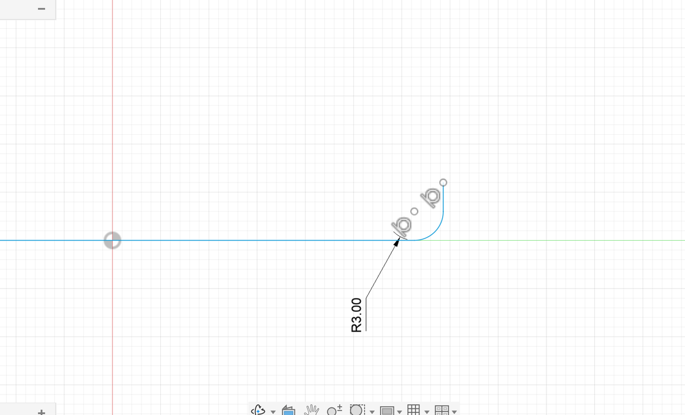
第 3 步：截面——先建一个构造平面#
截面（一个 Ø5 的圆）要画在路径的起点，而且要和路径垂直。路径一开始是竖直往下的，所以截面应该画在一个水平面上、高度等于底板上表面（t）。
直接点底板上表面建草图也可以（草图平面会无限延伸，画在挖空的槽口位置也没问题）。这里换一种做法：建一个构造平面，顺便学会这个常用工具。以后遇到“想画草图的地方没有现成的面”（比如悬在半空），就得靠它。
- 「构造 ▾ → 偏移平面」。
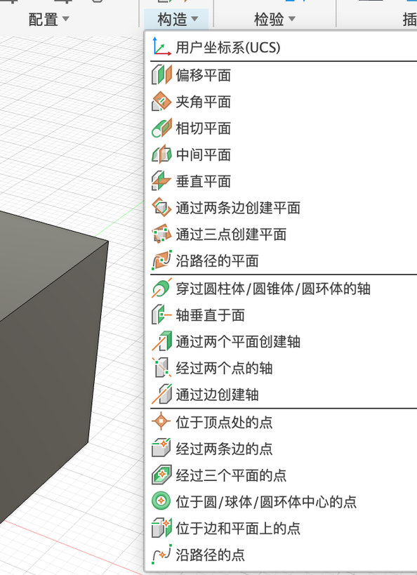
- 点 XY 平面（地面），距离输入
t，点「确定」。
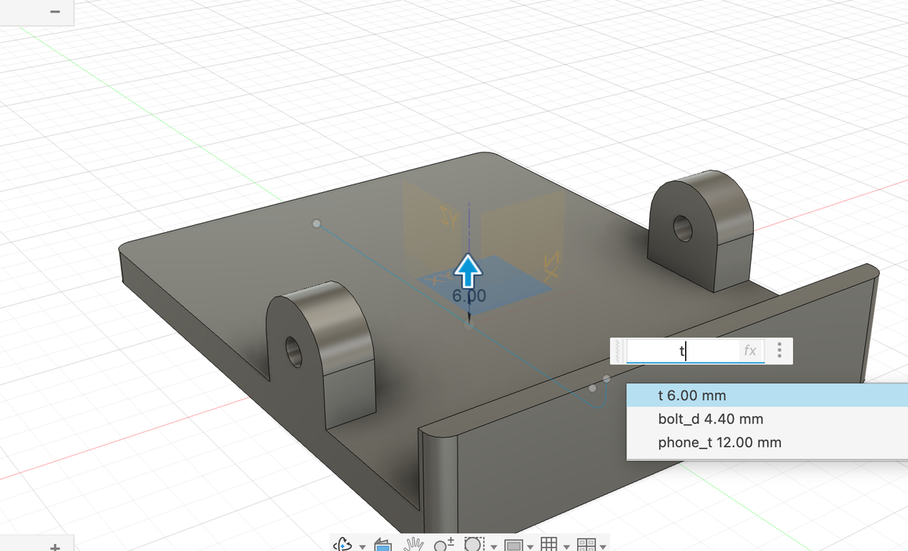
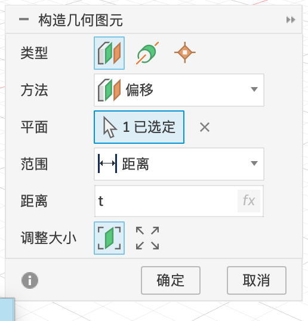
- 在这个新平面上建草图，以路径的起点为圆心画一个圆，直径
5。「完成草图」。
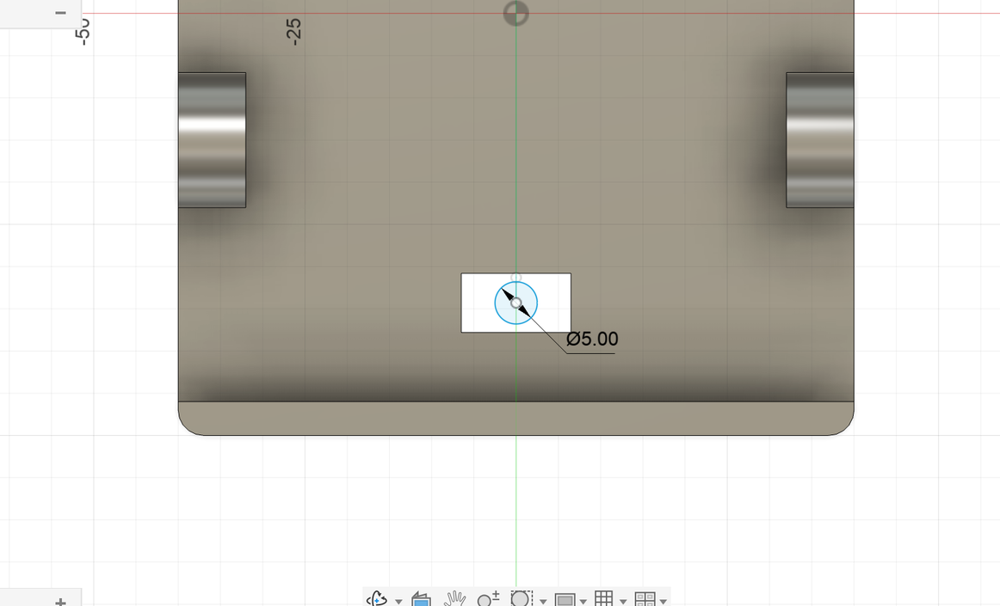
第 4 步：扫掠剪切#
- 「创建 → 扫掠」。「轮廓」点小圆（变成 1 已选定）。
- 点「路径」后面的「选择」按钮，再点画布上的路径线（「链选」勾着，点一段就整条选上）。
- 「操作」选「剪切」，点「确定」。
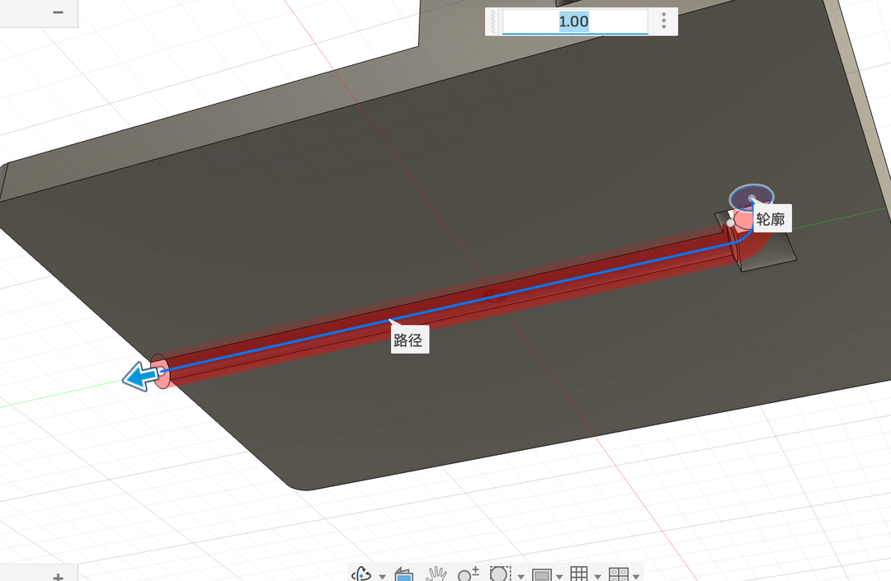
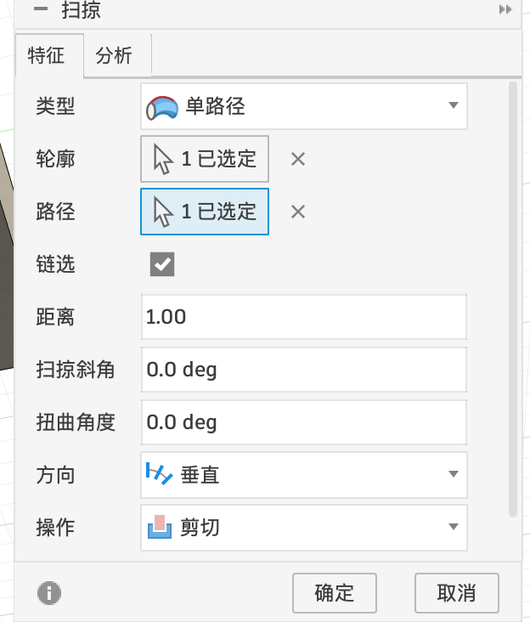
扫掠对话框每一项的含义见 1.2 扫掠。
第 5 步：剖开看看#
- 「检验 ▾ → 截面分析」。
- 点 YZ 平面作为剖切平面，模型被从正中间切开，能看到插头槽和下面拐弯的线槽。
- 点「确定」。截面分析会保存在浏览器的「分析」文件夹里，点小眼睛可以随时打开 / 关闭。
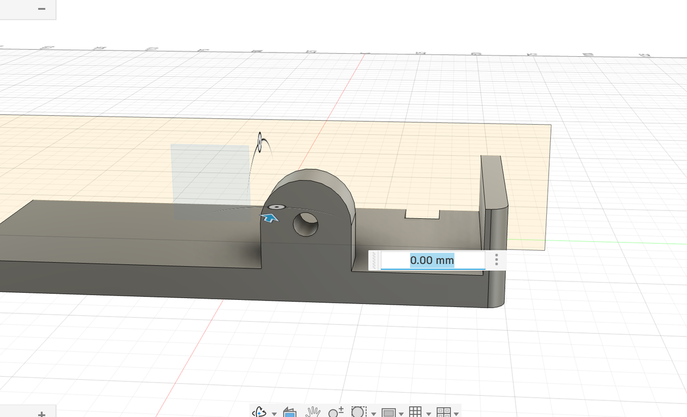
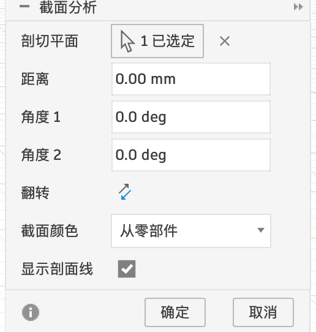
截面分析
| 选项 | 含义 |
|---|---|
| 剖切平面 | 从哪里切开 |
| 距离 / 角度 1 / 角度 2 | 把剖切平面平移、旋转，切到想看的位置（画布上也能拖箭头） |
| 翻转 | 保留另一半 |
| 截面颜色 | 切口用什么颜色显示（默认按零部件的颜色） |
| 显示剖面线 | 切口上画斜线（工程图的习惯画法） |